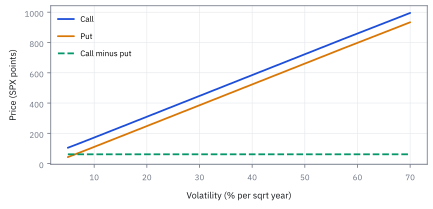

13.4 Solving Stochastic Differential Equations — Geometric Brownian Motion, Vasicek, and Cox–Ingersoll–Ross
สาม SDE ที่ต่างกันแค่ตัวคูณหน้า $dW$ ให้โลกคนละแบบ: ราคาหุ้นกระจายกว้างขึ้นไม่หยุด ดอกเบี้ยของ Vasicek ถูกดึงกลับจนความผันผวนชนเพดาน และ CIR ไม่ยอมให้ดอกเบี้ยติดลบ
ดอกเบี้ยระยะสั้นสมมติวันนี้ 1.50% ระบบความเสี่ยงของธนาคารจำลองมันด้วย Brownian motion ธรรมดา $r_t=0.015+0.012W_t$ (ขยับ 1.2 จุดต่อ $\sqrt{\text{yr}}$ ไม่มีแรงดึงกลับ) ได้ว่าหนึ่งปีข้างหน้าเฉลี่ย 1.50% SD 1.20 จุด โอกาสติดลบ 10.6% และ SD ของ 25 ปีข้างหน้า 6.00 จุด ถ้าดอกเบี้ยถูกดึงกลับหาระดับ 3.00% ด้วยความเร็ว 0.8 ต่อปีตามแบบจำลอง Vasicek ตัวเลขเหล่านี้ควรเป็นเท่าไร?
ลองตอบก่อนเปิดเฉลย
หนึ่งปีข้างหน้าเฉลี่ย 2.33% SD 0.85 จุด โอกาสติดลบ 0.30% ไม่ใช่ 10.6% ต่างกันราว 35 เท่า และไม่ว่ามองไกลแค่ไหน SD ไม่เกิน 0.95 จุด ที่ 25 ปีจึงเป็น 0.95 ไม่ใช่ 6.00 แรงดึงกลับทำสองอย่าง: ยกค่าเฉลี่ยออกห่างจากศูนย์ และทำให้ shock เก่าจางหายแทนที่จะสะสม
สิ่งที่เราจะสร้าง
13.2 แก้ GBM ด้วย Itô's lemma และ 13.3 ให้ความหมายกับ $\int b\,dW$ พร้อมสองเครื่องมือ คือค่าเฉลี่ยศูนย์และ isometry หน้านี้ใช้ของทั้งหมดนั้นแก้ SDE ที่ใช้จริงบนโต๊ะอีกสองตัว คือ Vasicek และ CIR ของอัตราดอกเบี้ย แล้วเทียบกับ GBM ของราคา SPY
ลำดับคือ: เทียบสามสมการ หาค่าเฉลี่ยของ Vasicek จาก ODE ก่อน แก้สมการเต็มด้วย integrating factor ที่ตรวจด้วย Itô หา variance ด้วย isometry ตอบโจทย์เปิดเรื่อง อ่านครึ่งชีวิตและเพดานของความผันผวน แล้วไปที่ CIR ว่าทำไมศูนย์เป็นพื้น และเมื่อไรเส้นทางแตะพื้นนั้น
ศัพท์ที่ใช้ในหัวข้อนี้
- Short rate
- อัตราดอกเบี้ยสำหรับกู้ยืมช่วงสั้นมากในแบบจำลอง ใช้เป็นตัวแปรเดียวที่ขับการคิดลดเงินและราคาพันธบัตร (13.7)
- Mean reversion
- แรงที่ดึงตัวแปรกลับหาระดับระยะยาว $\theta$ ยิ่งห่างยิ่งดึงแรง ความเร็ว $\kappa$ บอกว่า shock เก่าจางเร็วแค่ไหน ใช้กับสิ่งที่วนรอบระดับหนึ่ง เช่นดอกเบี้ย และส่วนต่างราคาของคู่หุ้น
- Vasicek model (Ornstein–Uhlenbeck)
- SDE ที่มีแรงดึงกลับและส่วนสุ่มขนาดคงที่ มีคำตอบเป็น Normal จึงคำนวณทุกอย่างได้ด้วยสูตร แต่ยอมให้ดอกเบี้ยติดลบ
- Cox–Ingersoll–Ross (CIR) model
- SDE ที่มีแรงดึงกลับเหมือนกัน แต่ส่วนสุ่มแปรตาม $\sqrt r$ จึงอ่อนลงเองเมื่อใกล้ศูนย์ ใช้กับตัวแปรที่ห้ามติดลบ เช่นดอกเบี้ย หรือ variance ใน Heston (14.7)
- Half-life
- เวลาที่ระยะห่างเฉลี่ยจาก $\theta$ หดเหลือครึ่งหนึ่ง คือ $\ln2/\kappa$ ใช้แปลง $\kappa$ ให้เป็นภาษาที่คุยกับคนได้
- Feller condition
- เงื่อนไข $2\kappa\theta\ge\sigma^2$ ของ CIR ถ้าเป็นจริง เส้นทางไม่แตะศูนย์เลย ถ้าไม่จริง แตะแล้วเด้งกลับ
สัญลักษณ์และหน่วย
| สัญลักษณ์ | ความหมาย | หน่วย |
|---|---|---|
| $r_t,\ r_0$ | short rate ที่เวลา $t$ และวันนี้ | ทศนิยมต่อปี |
| $\theta,\ \kappa$ | ระดับระยะยาว และความเร็วของแรงดึงกลับ | ทศนิยมต่อปี, ต่อปี |
| $\sigma_V$ | ขนาดส่วนสุ่มของ Vasicek | ทศนิยมต่อ $\sqrt{\text{yr}}$ |
| $\sigma_C$ | ขนาดส่วนสุ่มของ CIR ต่อ $\sqrt r$ | ต่อ $\sqrt{\text{yr}}$ คูณรากของอัตรา |
| $m_t,\ v_t$ | ค่าเฉลี่ยและ variance ของ $r_t$ มองจากวันนี้ | ทศนิยม, ทศนิยมกำลังสอง |
| $S_t,\ \mu,\ \sigma$ | ราคา SPY, drift และความผันผวนของ GBM (13.2) | \$ ต่อหุ้น, ต่อปี, ต่อ $\sqrt{\text{yr}}$ |
| $t_{1/2}$ | half-life | ปี |
ขั้นที่ 1 — สามสมการ ต่างกันที่ตัวคูณหน้า dW
วางสาม SDE ไว้ข้างกันในรูป $dX=a\,dt+b\,dW$ ของ 13.2 ส่วน $a$ ของหุ้นโตตามราคา ส่วน $a$ ของดอกเบี้ยชี้กลับหา $\theta$ ความต่างที่ตัดสินรูปของเส้นทางอยู่ที่ $b$
GBM ให้ส่วนสุ่มเป็นสัดส่วนกับราคา ราคาจึงไม่ติดลบ (13.2) Vasicek ให้ส่วนสุ่มเท่ากันทุกระดับ แม้ดอกเบี้ยอยู่ใกล้ศูนย์ก็ยังถูกเขย่าแรงเท่าเดิม CIR ให้ส่วนสุ่มหดลงตามรากของระดับ ตัวคูณตัวเดียวนี้กำหนดว่าเส้นทางติดลบได้หรือไม่
Figure 13.4a — สามรูปแบบของตัวคูณหน้า dW

ขั้นที่ 2 — แรงดึงกลับเป็นตัวเลข และค่าเฉลี่ยที่ได้โดยไม่ต้องแก้ SDE
ก่อนแก้สมการ ลองอ่าน drift ของ Vasicek ที่สามระดับด้วย $\kappa=0.8$ และ $\theta=3\%$ จากนั้นเอาค่าเฉลี่ยทั้งสองข้างของ SDE: พจน์ $\sigma_V\,dW$ เฉลี่ยศูนย์ (13.3 ขั้นที่ 5) เหลือ ODE ธรรมดาของค่าเฉลี่ย $m_t$ แล้วให้ $d_t:=m_t-\theta$ เป็นระยะห่างจากเป้า
ต่ำกว่าเป้า 1.5 จุด ถูกดันขึ้นด้วยอัตรา 1.2 จุดต่อปี สูงกว่าเป้าเท่ากันถูกดึงลงเท่ากัน แรงแปรตามระยะห่างเหมือนสปริง พอเข้าใกล้เป้าแรงก็อ่อนลง ระยะห่างจึงหดแบบ exponential ในหนึ่งปีระยะห่าง −1.5 จุดเหลือ 44.9% คือ −0.674 จุด ค่าเฉลี่ยจึงขึ้นมาที่ 2.326%
ค่าเฉลี่ยได้มาโดยไม่ต้องรู้อะไรเรื่องการกระจายเลย แต่คำถามเรื่องโอกาสติดลบต้องรู้ทั้งรูป ขั้นถัดไปจึงแก้ SDE เต็ม
ขั้นที่ 3 — integrating factor ที่ตรวจด้วย Itô's lemma
แก้ตรง ๆ ไม่ได้เพราะ $r$ อยู่ทั้งสองข้าง เหมือน GBM ใน 13.2 ย้ายพจน์ $-\kappa r\,dt$ ไปทางซ้ายได้ $dr+\kappa r\,dt$ ซึ่งคล้ายการเปลี่ยนของผลคูณ ตัวคูณที่ทำให้มันเป็นผลคูณพอดีคือ $e^{\kappa t}$ ใช้ Itô กับ $f(t,r)=e^{\kappa t}r$ เพื่อดูว่ามีพจน์พิเศษไหม
$f$ เป็นเส้นตรงใน $r$ ความโค้งจึงเป็นศูนย์และ Itô correction หายไป ครั้งนี้ calculus ปกติให้คำตอบถูกพอดี บรรทัดสุดท้ายแทน $dr+\kappa r\,dt$ ด้วย $\kappa\theta\,dt+\sigma_V\,dW$ จาก SDE ตอนนี้ฝั่งขวาไม่มี $r$ เหลือ บวกทุกท่อนได้ตรง ๆ
ขั้นที่ 4 — บวกตลอดช่วง แล้วหารกลับ
บวกสองข้างจาก 0 ถึง $t$ ส่วนของ $dt$ เป็น integral ธรรมดา $\int_0^t\kappa\theta e^{\kappa s}\,ds=\theta(e^{\kappa t}-1)$ ส่วนของ $dW$ เป็น Itô integral ที่ตัวคูณ $e^{\kappa s}$ รู้ล่วงหน้า แล้วหารด้วย $e^{\kappa t}$
สองพจน์แรกคือ $m_t$ ของขั้นที่ 2 พจน์สุดท้ายคือ shock ทุกตัวที่เกิดระหว่างทาง แต่ละตัวคูณด้วย $e^{-\kappa(t-s)}$ ซึ่งเล็กลงตามอายุของ shock ที่ $\kappa=0.8$ shock เมื่อหนึ่งปีก่อนเหลือน้ำหนัก 0.449 และเมื่อห้าปีก่อนเหลือ 0.018 ดอกเบี้ยลืมอดีต ต่างจากราคาหุ้นที่ shock ทุกตัวอยู่ในราคาตลอดไป
ขั้นที่ 5 — รูปร่าง Normal และ variance จาก isometry
พจน์สุ่มคือผลรวมของ $e^{-\kappa(t-s)}\Delta W$ ที่ตัวคูณเป็นตัวเลขรู้ล่วงหน้า แต่ละก้อนเป็น Normal และอิสระกัน ผลรวมจึงเป็น Normal ค่าเฉลี่ยศูนย์ (13.3 ขั้นที่ 5) ส่วน variance ใช้ isometry (13.3 ขั้นที่ 6) ยกตัวคูณกำลังสองแล้วรวมตามเวลา โดยเปลี่ยนตัวแปรเป็นอายุ $u=t-s$
ตัวหารเป็น $2\kappa$ ไม่ใช่ $\kappa$ เพราะ isometry ยกตัวคูณกำลังสองก่อนรวม $e^{-\kappa u}$ จึงกลายเป็น $e^{-2\kappa u}$ เมื่อ $t$ โต $e^{-2\kappa t}$ หายไป variance เข้าหาค่าคงที่ $\sigma_V^2/(2\kappa)$ นี่คือเพดานของความไม่แน่นอน
ขั้นที่ 6 — คำตอบของโจทย์เปิดเรื่อง: หนึ่งปีข้างหน้า
โจทย์ให้อะไรมาบ้าง: $r_0=1.50\%$, $\theta=3.00\%$, $\kappa=0.8$ ต่อปี และ $\sigma_V=1.2\%$ ต่อ $\sqrt{\text{yr}}$ ใช้ $m_t$ ของขั้นที่ 2 และ $v_t$ ของขั้นที่ 5 แล้ววัดว่าศูนย์ห่างจากค่าเฉลี่ยกี่ SD
คำตอบ: ดอกเบี้ยปีหน้าเฉลี่ย 2.326% SD 0.8475 จุด โอกาสติดลบ 0.30% หรือราว 3 ใน 1,000 เส้นทาง แบบจำลองที่ไม่มีแรงดึงกลับให้ 10.6% มากกว่า 35 เท่า เพราะค่าเฉลี่ยค้างอยู่ที่ 1.5% และ SD ใหญ่กว่า ที่ห้าปี Vasicek ให้ค่าเฉลี่ย 2.9725% SD 0.9485 จุด โอกาสติดลบลดเหลือ 0.086%
ตรวจเองใน 10 วินาที: $2.326/0.8475\approx2.74$ SD และหางซ้ายเกิน 2.7 SD ของระฆังคือราว 0.3% ส่วน SD ต่ำกว่า 1.2 จุดเพราะ shock ช่วงต้นปีจางไปแล้วบางส่วนตอนสิ้นปี
ขั้นที่ 7 — half-life และเพดานของความผันผวน
$\kappa=0.8$ ไม่ได้บอกอะไรกับคนฟังมากนัก แปลงเป็นเวลาที่ระยะห่างหายไปครึ่งหนึ่ง แล้วเทียบ SD ของ Vasicek กับของแบบจำลองไม่มีแรงดึงกลับ $\sigma_V\sqrt t$ ที่ 1, 5 และ 25 ปี
ระยะห่างจากเป้าหายครึ่งหนึ่งใน 0.8664 ปี หรือราว 10.4 เดือน SD ปีแรกถึง 89.3% ของเพดานแล้ว และที่ห้าปีถึง 99.98% ส่วนแบบจำลองไม่มีแรงดึงกลับกว้างขึ้นตามรากของเวลาไม่หยุด ที่ 25 ปีกว้างกว่าเพดาน 6.3 เท่า
เพดานคือจุดที่แรงดึงกลับหักล้างการสะสมของ shock พอดี shock ใหม่เข้ามาเท่าไร ของเก่าก็จางออกไปเท่านั้น
Figure 13.4b — ค่าเฉลี่ยและแถบ 90% ของ Vasicek

ขั้นที่ 8 — GBM ของ SPY: ไม่มีอะไรดึงกลับ ความกว้างจึงไม่มีเพดาน
13.2 แก้ GBM ไว้แล้ว เขียนซ้ำเพื่อเทียบกับ Vasicek ทีละส่วน: ตัวแปรที่เป็น Normal คือ $\ln S$ และ SD ของมันคือ $\sigma\sqrt t$ ใช้ SPY \$520 drift 8% ความผันผวน 18%
shock ของ GBM ไม่จาง ทุกตัวอยู่ใน $W_t$ ด้วยน้ำหนัก 1 ตลอดไป ความกว้างบนแกน log จึงโตตามรากของเวลาเหมือนเส้นจุดใน Figure 13.4b ที่ 25 ปี SD 0.90 บนแกน log คือช่วงหนึ่ง SD ตั้งแต่ราว 0.41 ถึง 2.46 เท่าของ median ราคาหุ้นไม่มีระดับให้กลับไปหา ดอกเบี้ยมี
ขั้นที่ 9 — CIR: ทำไมศูนย์เป็นพื้น และค่าเฉลี่ยกับ SD ที่หาได้จาก Itô
ใช้ $\kappa$ และ $\theta$ ชุดเดิม กับ $\sigma_C=0.10$ (ตัวเลขของ Figure 13.4c) ดูสองส่วนของ CIR เมื่อ $r$ ลงไปใกล้ศูนย์ แล้วหาค่าเฉลี่ยกับ variance: drift เป็นเส้นตรงเหมือน Vasicek จึงได้ $m_t$ ชุดเดิม ส่วนโมเมนต์ที่สอง $M_t:=\mathbb E[r_t^2]$ ใช้ Itô กับ $f=r^2$ ($f_r=2r$, $f_{rr}=2$, $b^2=\sigma_C^2r$)
ใกล้ศูนย์ แรงดันขึ้นเหลือ $\kappa\theta=0.024$ ต่อปีเต็ม ๆ ส่วนแรงเขย่าหายไป ที่ดอกเบี้ย 0.01% แรงเขย่าของ CIR เหลือ 0.001 เล็กกว่า 0.012 ของ Vasicek 12 เท่า แรงดันจึงชนะและผลักกลับขึ้น คำตอบต่อเนื่องของ CIR จึงไม่ติดลบ
ODE ของ $M_t$ เป็นเส้นตรงอันดับหนึ่ง แก้ด้วย integrating factor แบบขั้นที่ 3 ได้ SD 1.016% ที่หนึ่งปี ค่า $\sigma_C=0.10$ เขย่าที่ระดับ 3% ด้วย $0.10\sqrt{0.03}=0.0173$ แรงกว่า 0.012 ของ Vasicek SD จึงใหญ่กว่า แม้ค่าเฉลี่ยเท่ากัน
ขั้นที่ 10 — ไม่ติดลบ ยังไม่แปลว่าไม่แตะศูนย์: Feller condition
ใกล้ศูนย์มีการแข่งกันระหว่างแรงดัน $\kappa\theta$ กับแรงเขย่า $\sigma_C^2$ ผลที่พิสูจน์ในตำรา SDE (ยกมาใช้ ไม่พิสูจน์ในหน้านี้) คือเส้นทางไม่แตะศูนย์เลยเมื่ออัตราส่วนข้างล่างไม่ต่ำกว่า 1 ถ้าต่ำกว่า 1 แตะได้แล้วเด้งกลับ ลองสองค่าของ $\sigma_C$
ค่าแรกผ่านเงื่อนไขสบาย ๆ ค่าที่สองไม่ผ่าน โค้ดท้ายหน้าเดิน CIR วันละก้าวห้าปี ก้าวละ $\Delta r=\kappa(\theta-r^+)\Delta t+\sigma_C\sqrt{r^+\Delta t}\,Z$ โดย $r^+=\max(r,0)$ และตัดค่าติดลบเป็นศูนย์ (full truncation) 2,000 เส้นทางต่อค่า: อัตราส่วน 4.8 ไม่มีเส้นไหนแตะศูนย์ อัตราส่วน 0.768 แตะ 73.5% ของเส้นทาง
Figure 13.4c — ขอบศูนย์ของ CIR กับ Feller condition

ขั้นที่ 11 — ตรวจสูตรของ Vasicek ด้วยการเดิน SDE ทีละวัน
โจทย์ให้อะไรมาบ้าง: โค้ดท้ายหน้าเดิน $\Delta r=\kappa(\theta-r)\Delta t+\sigma_V\sqrt{\Delta t}\,Z$ วันละก้าว 252 ก้าว 20,000 เส้นทาง ด้วย seed 134 โดยไม่ใช้สูตรของขั้นที่ 2 ถึง 5 เลย แล้วเทียบกับสูตร
| ค่าที่ปลายปี | สูตร | ได้จากการเดิน SDE | ห่างกี่ SE |
|---|---|---|---|
| ค่าเฉลี่ย | 2.3260% | 2.3252% | −0.1 |
| SD | 0.8475% | 0.8450% | −0.6 |
| สัดส่วนที่ติดลบ | 0.303% | 0.230% | −1.9 |
คำตอบ: ค่าเฉลี่ยและ SD ตรงกับสูตรภายใน 1 SE แถวสุดท้ายห่าง 1.9 SE ยังอยู่ในช่วงปกติ เพราะเหตุการณ์ 0.3% เกิดเฉลี่ยแค่ราว 61 ครั้งใน 20,000 เส้นทาง (ได้จริง 46) การวัดหางด้วยการสุ่มจึงหยาบกว่าการวัดค่าเฉลี่ยมาก เป็นเหตุผลหนึ่งที่สูตรปิดมีค่า
ตรวจเองใน 10 วินาที: SE ของค่าเฉลี่ยคือ $0.8475\%/\sqrt{20{,}000}=0.0060\%$ ห่าง $0.0008\%$ คือ 0.13 SE และ SE ของสัดส่วนคือ $\sqrt{0.00303(0.99697)/20{,}000}=0.039\%$
คำถามที่ควรถามออกมาดัง ๆ
ดอกเบี้ยติดลบเกิดขึ้นจริง แล้วทำไมต้องกลัวมัน? ไม่ต้องกลัวเสมอไป ECB ตั้ง deposit rate ต่ำสุด −0.50% ในปี 2019 และธนาคารกลางญี่ปุ่นใช้ −0.1% ตั้งแต่ปี 2016 ถึง 2024 ในตลาดแบบนั้น Vasicek ที่ยอมให้ติดลบเป็นข้อดี คำถามที่ถูกคือในตลาดที่ดูแลอยู่ ดอกเบี้ยลงต่ำกว่าศูนย์ได้แค่ไหน แล้วเลือกแบบจำลองตามนั้น
CIR ไม่มีคำตอบแบบปิดหรือ? ไม่มีสูตรของเส้นทางแบบขั้นที่ 4 แต่การกระจายของ $r_t$ รู้ครบ เป็น noncentral chi-square ที่ปรับสเกล ค่าเฉลี่ยและ variance เป็นสูตรปิดตามขั้นที่ 9 และสุ่มค่าจากการกระจายนั้นได้ตรง ๆ โดยไม่ต้องเดินทีละวัน
ทำไมหุ้นไม่ใช้แรงดึงกลับบ้าง? ถ้าราคามีระดับที่ถูกดึงกลับหา ใครก็ซื้อตอนต่ำกว่าระดับแล้วขายตอนสูงกว่าได้กำไรแทบแน่นอน ราคาหุ้นจึงไม่ควรมีแรงแบบนั้น แต่ส่วนต่างของคู่หุ้นที่ cointegrate กันมี (15.4) และใช้ Vasicek แบบเดียวกับหน้านี้
ความผิดที่ให้ตัวเลขผิดโดยไม่มีใครเตือน
ใช้ Brownian motion ธรรมดากับดอกเบี้ย: โอกาสติดลบในหนึ่งปีกลายเป็น 10.6% แทน 0.30% และ SD ของ 25 ปีเป็น 6.00 จุดแทน 0.95 จุด ราคาพันธบัตรยาวและ option บนดอกเบี้ยที่คิดจากช่วงกว้างขนาดนั้นผิดไปมาก
ใช้ $\kappa$ ต่อปีกับเวลาเป็นเดือน: ใส่ $t=12$ แทน $t=1$ ได้ $e^{-9.6}$ ค่าเฉลี่ยหนึ่งปีกลายเป็น 2.9999% คือแทบถึงเป้าแล้ว แทนที่จะเป็น 2.326% ต้องเขียนหน่วยของ $\kappa$ กำกับไว้ทุกครั้ง
ลืมเลข 2 ในตัวหารของ variance: ใช้ $\sigma_V^2/\kappa$ ได้เพดาน SD 1.342% แทน 0.9487% กว้างเกิน $\sqrt2=1.414$ เท่า ตัวเลข 2 มาจากการยกตัวคูณกำลังสองใน isometry (ขั้นที่ 5)
ใช้ทำอะไรบนโต๊ะจริง
โต๊ะดอกเบี้ยใช้ Vasicek และ CIR จำลองดอกเบี้ยในอนาคตสำหรับวัดความเสี่ยงของพอร์ตพันธบัตร และตั้งราคาพันธบัตรกับ option บนดอกเบี้ยด้วยสูตรปิด 13.7 จะคิดราคาพันธบัตรของ Vasicek ด้วย Feynman–Kac จากค่าเฉลี่ยของดอกเบี้ยสะสม แบบในโจทย์ข้อ 3
งานประจำวันอีกอย่างคือตรวจโค้ดจำลอง ค่าเฉลี่ยและ SD ของเส้นทางที่จำลองได้ต้องตรงกับขั้นที่ 2 และ 5 ภายในไม่กี่ SE แบบขั้นที่ 11 และเวลาอธิบายแบบจำลองให้คนอื่นฟัง ใช้ half-life แทน $\kappa$
สามโจทย์ตรวจความเข้าใจ
1. Vasicek ที่ $\kappa=0.8$ และ $\sigma_V=1.2\%$ เท่าเดิม แต่ดอกเบี้ยเริ่มที่ 3% และระดับระยะยาว 4% หนึ่งปีข้างหน้าเฉลี่ยเท่าไร SD เท่าไร และโอกาสติดลบเท่าไร?
เฉลย
$m_1=0.04-0.01(0.449329)=0.035507$ SD เท่าเดิม 0.8475 จุด เพราะ $v_t$ ไม่ขึ้นกับ $r_0$ หรือ $\theta$ ศูนย์ห่าง $3.5507/0.8475=4.19$ SD โอกาสติดลบ $\Phi(-4.19)=0.0014\%$ ลดลงกว่า 200 เท่าจาก 0.30% ปัญหาติดลบของ Vasicek หนักที่สุดตอนดอกเบี้ยต่ำ ซึ่งเป็นตอนที่ตลาดสนใจมันที่สุด
2. ถ้าต้องการ half-life 2 ปี ต้องใช้ $\kappa$ เท่าไร และถ้า $\sigma_V=1.2\%$ เพดานของ SD จะเป็นเท่าไร?
เฉลย
$\kappa=\ln2/2=0.3466$ ต่อปี เพดาน SD คือ $0.012/\sqrt{2(0.3466)}=0.012/\sqrt{0.6931}=1.441\%$ แรงดึงกลับช้าลง shock จางช้าลง เพดานจึงสูงขึ้นจาก 0.9487%
3. ค่าเฉลี่ยของดอกเบี้ยเฉลี่ยตลอดปีหน้า $\mathbb E\big[\int_0^1r_t\,dt\big]$ ของโจทย์เปิดเรื่องคือเท่าไร?
เฉลย
สลับค่าเฉลี่ยกับ integral ได้ $\int_0^1m_t\,dt=\theta+(r_0-\theta)(1-e^{-\kappa})/\kappa=0.03-0.015(0.550671)/0.8=0.03-0.010325=0.019675$ คือราว 1.97% ต่อปี อยู่ระหว่าง 1.5% วันนี้กับ 2.326% ปลายปี ตัวเลขนี้คือแกนของราคาพันธบัตรหนึ่งปีใน 13.7
คำนวณซ้ำด้วย JavaScript
รันใน Node.js ได้โดยไม่ต้องติดตั้งอะไร โค้ดคิดค่าเฉลี่ย SD และโอกาสติดลบของ Vasicek จากสูตร ค่าเฉลี่ยและ SD ของ CIR จากผลของ Itô แล้วเดินทั้งสอง SDE ทีละวันด้วยเครื่องสุ่มที่มี seed เพื่อเทียบ ฟังก์ชันปฏิเสธ input ที่ไม่มีความหมาย และพิมพ์ JSON บรรทัดเดียว
// Standard Normal CDF: Simpson's rule on the bell curve from 0 to |x| (1.9).
function Phi(x) {
if (!Number.isFinite(x) || Math.abs(x) > 8) throw new RangeError('Phi needs a finite score between -8 and 8');
const n = 4000, h = Math.abs(x) / n, phi = z => Math.exp(-z * z / 2) / Math.sqrt(2 * Math.PI);
let s = 0;
for (let i = 0; i <= n; i++) s += (i === 0 || i === n ? 1 : i % 2 ? 4 : 2) * phi(i * h);
return 0.5 + Math.sign(x) * s * h / 3;
}
function checkRate(r0, theta, kappa, sigma, t) {
if (![r0, theta, kappa, sigma, t].every(Number.isFinite)) throw new TypeError('Rate inputs must be finite numbers');
if (kappa <= 0 || sigma <= 0 || t < 0) throw new RangeError('Need kappa > 0, sigma > 0 and t >= 0');
}
// Vasicek dr = kappa (theta - r) dt + sigma dW: the solution is Normal with this mean and variance.
function vasicek(r0, theta, kappa, sigma, t) {
checkRate(r0, theta, kappa, sigma, t);
const mean = theta + (r0 - theta) * Math.exp(-kappa * t);
const variance = sigma * sigma / (2 * kappa) * (1 - Math.exp(-2 * kappa * t));
const sd = Math.sqrt(variance);
return {mean, sd, negative: t > 0 ? Phi(-mean / sd) : Number(r0 < 0)};
}
// CIR dr = kappa (theta - r) dt + sigma sqrt(r) dW. Same mean; the second moment M solves
// M' = (2 kappa theta + sigma^2) m - 2 kappa M (Ito on r^2), which integrates to this variance.
function cir(r0, theta, kappa, sigma, t) {
checkRate(r0, theta, kappa, sigma, t);
if (r0 < 0 || theta <= 0) throw new RangeError('CIR needs r0 >= 0 and theta > 0');
const e1 = Math.exp(-kappa * t), e2 = Math.exp(-2 * kappa * t);
const mean = theta + (r0 - theta) * e1;
const variance = r0 * sigma * sigma / kappa * (e1 - e2) + theta * sigma * sigma / (2 * kappa) * (1 - e1) ** 2;
return {mean, sd: Math.sqrt(variance), feller: 2 * kappa * theta / (sigma * sigma)};
}
// mulberry32 + Box-Muller: seeded standard Normals, the same generator as 13.1.
function normals(seed) {
let a = seed >>> 0, spare = null;
const u = () => {
a = (a + 0x6D2B79F5) >>> 0;
let t = Math.imul(a ^ (a >>> 15), a | 1);
t ^= t + Math.imul(t ^ (t >>> 7), t | 61);
return (((t ^ (t >>> 14)) >>> 0) + 0.5) / 4294967296;
};
return () => {
if (spare !== null) { const z = spare; spare = null; return z; }
const r = Math.sqrt(-2 * Math.log(u())), angle = 2 * Math.PI * u();
spare = r * Math.sin(angle);
return r * Math.cos(angle);
};
}
// Step dr = kappa (theta - r) dt + sigma r^power dW daily; power 0 is Vasicek, 0.5 is CIR (full truncation at 0).
function simulateRate(paths, years, r0, theta, kappa, sigma, power, seed) {
checkRate(r0, theta, kappa, sigma, years);
if (!Number.isInteger(paths) || paths < 2 || !Number.isInteger(years) || years < 1) throw new RangeError('Need whole numbers paths >= 2 and years >= 1');
if (power !== 0 && power !== 0.5) throw new RangeError('power must be 0 (Vasicek) or 0.5 (CIR)');
const z = normals(seed), steps = 252 * years, dt = 1 / 252, sq = Math.sqrt(dt);
let sum = 0, sumSq = 0, negative = 0, touched = 0;
for (let p = 0; p < paths; p++) {
let r = r0, hit = false;
for (let k = 0; k < steps; k++) {
const x = power ? Math.max(r, 0) : r;
r += kappa * (theta - x) * dt + sigma * (power ? Math.sqrt(x) : 1) * sq * z();
if (power && r <= 0) { r = 0; hit = true; }
}
sum += r; sumSq += r * r;
if (r < 0) negative++;
if (hit) touched++;
}
const mean = sum / paths;
return {mean, sd: Math.sqrt((sumSq - paths * mean * mean) / (paths - 1)), negative: negative / paths, touched: touched / paths};
}
const r0 = 0.015, theta = 0.03, kappa = 0.8, sigma = 0.012;
const v1 = vasicek(r0, theta, kappa, sigma, 1), v5 = vasicek(r0, theta, kappa, sigma, 5);
const cap = sigma / Math.sqrt(2 * kappa), halfLife = Math.log(2) / kappa;
const sim = simulateRate(20000, 1, r0, theta, kappa, sigma, 0, 134);
const N = 20000, seMean = v1.sd / Math.sqrt(N);
console.log(JSON.stringify({
pull: [0.015, 0.03, 0.045].map(r => kappa * (theta - r)),
v1, v5, cap, halfLife, halfLifeMonths: 12 * halfLife,
noPull: {sd1: sigma, negative1: Phi(-r0 / sigma), sd5: sigma * Math.sqrt(5), sd25: sigma * 5},
saturation: [1, 5, 25].map(t => vasicek(r0, theta, kappa, sigma, t).sd / cap),
sd25: vasicek(r0, theta, kappa, sigma, 25).sd,
sim, z: {mean: (sim.mean - v1.mean) / seMean, sd: (sim.sd - v1.sd) / (v1.sd / Math.sqrt(2 * N)),
negative: (sim.negative - v1.negative) / Math.sqrt(v1.negative * (1 - v1.negative) / N)},
cir: {floorDrift: kappa * theta, noiseAt: 0.10 * Math.sqrt(0.0001), one: cir(r0, theta, kappa, 0.10, 1),
longRunSD: Math.sqrt(theta * 0.01 / (2 * kappa)), fellerLow: cir(r0, theta, kappa, 0.10, 1).feller,
fellerHigh: cir(r0, theta, kappa, 0.25, 1).feller},
cirSim: {low: simulateRate(2000, 5, r0, theta, kappa, 0.10, 0.5, 135), high: simulateRate(2000, 5, r0, theta, kappa, 0.25, 0.5, 136)},
spy25: 0.18 * Math.sqrt(25),
pitfall: {monthsMean: theta + (r0 - theta) * Math.exp(-kappa * 12), wrongCap: sigma / Math.sqrt(kappa)},
exercises: {higher: vasicek(0.03, 0.04, kappa, sigma, 1), kappaFor2y: Math.log(2) / 2,
capFor2y: sigma / Math.sqrt(2 * Math.log(2) / 2), avgRate: theta + (r0 - theta) * (1 - Math.exp(-kappa)) / kappa}
}));ที่มาที่ไป
ปี 1900 Louis Bachelier ใช้ Brownian motion แบบบวกกับราคา ราคาจึงติดลบได้ ปี 1965 Paul Samuelson ใช้ GBM แทน และปี 1973 Black กับ Scholes ตั้งราคา option บนมัน ดอกเบี้ยไม่เดินหนีไปเรื่อย ๆ แบบหุ้น มันวนรอบระดับที่นโยบายการเงินกำหนดทิศ Oldrich Vasicek (1977) จึงใช้ process ของ Ornstein กับ Uhlenbeck (1930) ที่ฟิสิกส์ใช้อธิบายความเร็วของอนุภาค และ Cox, Ingersoll กับ Ross (1985) เปลี่ยนส่วนสุ่มเป็นแบบรากที่สองเพื่อกันดอกเบี้ยติดลบ
ข้อจำกัด: สมมติอะไร และของจริงเป็นอย่างไร
| เรื่อง | หน้านี้สมมติว่า | ของจริง | ผลเวลาใช้งาน |
|---|---|---|---|
| พารามิเตอร์ | $\kappa$, $\theta$, $\sigma$ คงที่ | เปลี่ยนตามรอบนโยบายการเงิน | ต้องประมาณใหม่บ่อย และค่าที่ได้ไม่นิ่ง |
| จำนวนปัจจัย | ดอกเบี้ยทุกช่วงอายุขยับตามตัวแปรเดียว | เส้นอัตราดอกเบี้ยบิดและโค้งได้ (18.2) | จับการเปลี่ยนรูปของเส้นไม่ได้ โต๊ะจริงใช้หลายปัจจัย |
| การกระโดด | ดอกเบี้ยขยับต่อเนื่อง | ธนาคารกลางขยับเป็นขั้น เช่นครั้งละ 0.25 จุด ในวันประชุม | ระยะสั้นมาก แบบจำลองต่อเนื่องบอกรูปการกระจายผิด |
| ขอบศูนย์ | Vasicek ติดลบได้, CIR ไม่ได้ | ติดลบได้เล็กน้อยในบางตลาด | บางโต๊ะใช้ CIR ที่เลื่อนขอบลงไปต่ำกว่าศูนย์ |
สิ่งที่ควรตอบได้หลังอ่าน
- GBM, Vasicek และ CIR ต่างกันที่ตัวคูณหน้า $dW$: โตตามระดับ คงที่ หรือโตตามรากของระดับ และตัวคูณนี้ตัดสินว่าติดลบได้ไหม
- Vasicek แก้ด้วย $e^{\kappa t}$ ซึ่ง Itô correction เป็นศูนย์: $r_t\sim\mathcal N\big(\theta+(r_0-\theta)e^{-\kappa t},\ \tfrac{\sigma_V^2}{2\kappa}(1-e^{-2\kappa t})\big)$
- เริ่ม 1.50% เป้า 3.00%: ปีหน้าเฉลี่ย 2.326% SD 0.8475 จุด โอกาสติดลบ 0.30% ไม่ใช่ 10.6% ของแบบจำลองไม่มีแรงดึงกลับ
- half-life 0.8664 ปี และ SD ไม่เกิน 0.9487 จุดไม่ว่ามองไกลเท่าไร ขณะที่ GBM ของ SPY มี SD บนแกน log โตเป็น 0.90 ที่ 25 ปี
- CIR ไม่ติดลบ ค่าเฉลี่ยเท่ากับ Vasicek และไม่แตะศูนย์เมื่อ $2\kappa\theta\ge\sigma_C^2$ (อัตราส่วน 4.8: 0% แตะ, 0.768: ราว 73%)
13.5 จะใช้ Itô กับฟังก์ชันของสอง process พร้อมกัน เช่นมูลค่าพอร์ตสองสินทรัพย์ หรือราคาหุ้นคูณอัตราแลกเปลี่ยน แล้วดูว่า correlation เข้ามาในพจน์พิเศษอย่างไร